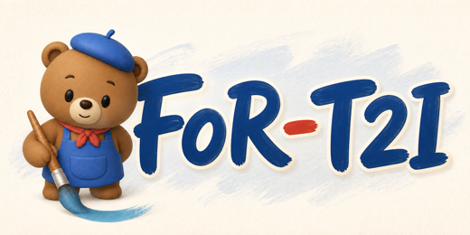
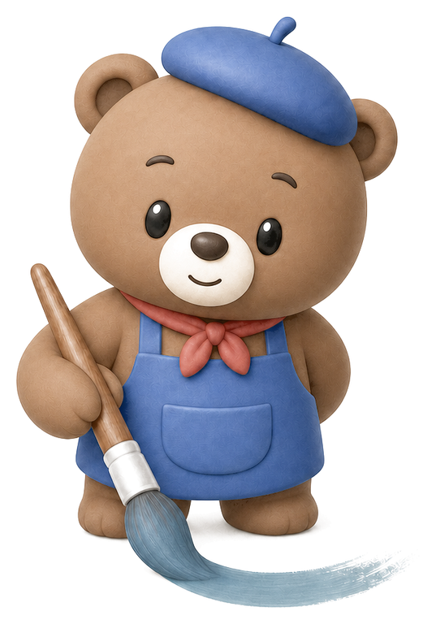

SUV / cat / bird
Cat above the SUV, bird anchored to the left side of the image frame.

ERNIE Team work

FoR-T2ICan T2I Models Draw From the Right Frame of Reference?
Benchmark design
Each sample pairs a FoR prompt with a camera-frame prompt that targets the same layout. The release stores structured coordinates, relations, orientation constraints, and prompt text in one evaluation-ready JSONL.
Cat above the SUV, bird anchored to the left side of the image frame.
Elephant below the cat, zebra placed on the left side of the frame.
TV right of the sofa bed, desk below the TV in a top-down layout.
Three-object chain with a clear left-to-right viewer-frame ordering.
Woman right of the van, cat above the woman in the image frame.
Eye-level depth sample with the sheep closer than the polar bear.
Release split
Evaluation pipeline
Expand 1200 samples into FoR and Cam image rows with expected objects and relations.
Use OWL-ViT with SAM fallback to localize required entities before relation scoring.
Check left-right, top-bottom, and depth relations against the structured target layout.
Crop anchor objects and verify facing direction with a VLM judge.
Detected case gallery
Hover over any case to inspect union bounding boxes. Use the view controls to pin the bbox overlay, DA3 depth map, or SAM fallback view; Image resets the card.
Project resources
The benchmark package, code, and paper links are grouped here for reviewers and downstream evaluators.